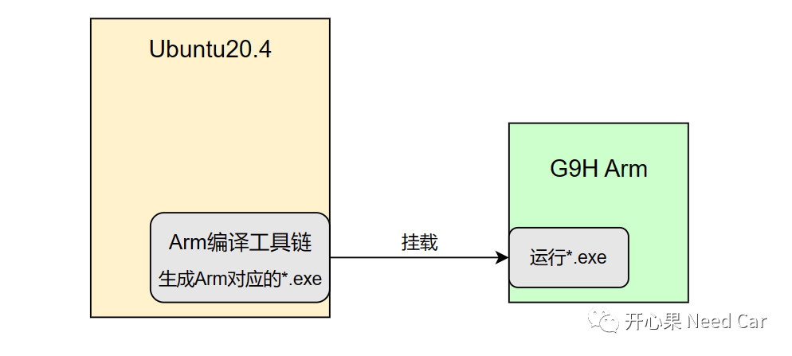
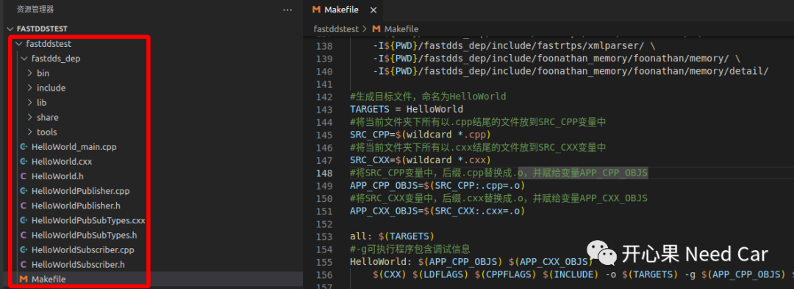
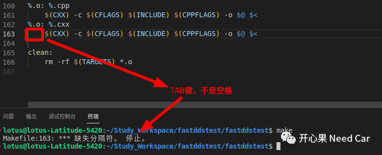
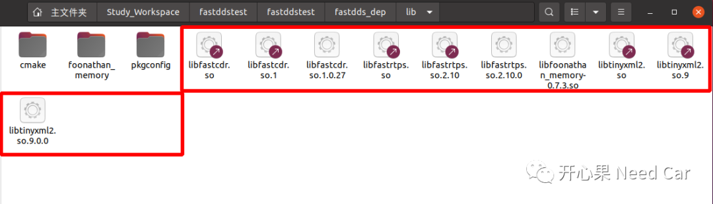
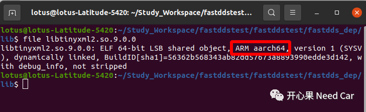
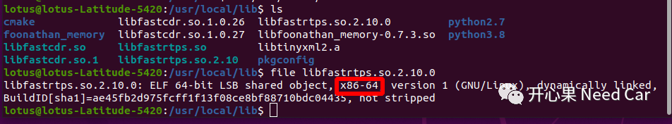

开心果 Need Car · 2023-04-08T17:41:00+08:00 · 微信原文
讨论本文问题之前，先聊一个话题：“目前，CP Autosar已经支持Some/IP和DDS（Data Distribution Service），DDS看起来只是另一个协议而已，汽车上，真有必要搞DDS吗？”。针对这个问题，说一下个人理解。在CP Autosar中，Some/IP出现地更早，就目前，量产的车型中，也应该有了Some/IP的身影。可以说，Some/IP专门为汽车量身定制。对于DDS，在其他工控领域早已应用，只是近些年，随着汽车智能化的发展，尤其域控等新技术的应用，DDS逐渐拓展到了汽车领域。如果汽车最终要成为万物互联的一部分，那我更看好DDS，相对于Some/IP，DDS协议在其他工控领域早已应用，这使得万物互联实现更容易。从这个意义上说，DDS不只是比Some/IP丰富了Qos，而是其能更好的接入万物互联。当然，并不能说Some/IP就不用了，在整车设计阶段，会根据不同的场景，选用不同的方案，而不是绝对地只用某种方案。
1、交叉编译是什么
回到主题，最近在移植eProsima Fast DDS，目标机：芯驰的G9H。使用的开发环境：Ubuntu20.4。如上可以看出，在Ubuntu20.4上安装的eProsima Fast DDS，使用默认编译，即使编译出可执行文件，也无法在G9H运行，因为两者的架构不同，运行指令不一样。Ubuntu20.4对应x86_64，而G9H对应Arm aarch64。
所以，如果要在Ubuntu20.4编译出可以在G9H运行的可执行文件，就需要在Ubuntu20.4环境下安装目标机对应的工具链，编译出目标机能运行的可执行文件，这也就是我们常说的“交叉编译”。

2、Makefile编写

（一）Makefile内容
#指定编译器路径CROSS_COMPILE = /tool/gcc_linaro/gcc-linaro-7.3.1-2018.05-x86_64_aarch64-linux-gnu/bin/aarch64-linux-gnu-#gun汇编器AS = $(CROSS_COMPILE)as#gnu 链接器LD = $(CROSS_COMPILE)ldCXX = $(CROSS_COMPILE)g++#用于创建，修改和提取档案的实用程序AR = $(CROSS_COMPILE)ar#列出目标文件中的符号NM = $(CROSS_COMPILE)nm#丢弃的符号STRIP = $(CROSS_COMPILE)strip#复制并转换目标文件OBJCOPY = $(CROSS_COMPILE)objcopy#显示目标文件中的信息OBJDUMP = $(CROSS_COMPILE)objdumpexport AS LD CXX AR NMexport STRIP OBJCOPY OBJDUMPCFLAGS +=-I. -g -O0 -Wall -DUSE_LINUX -D__YOCTO_G2D_TEST__ -fpermissiveCPPFLAGS := -g -O0 -Wall -Wno-reorder -std=c++11 -fpermissive -fPIC#–L -l (大写L指定动态库的路径，小写L指定动态库的名称)，PWD表示当前路径LDFLAGS += -lstdc++ -lpthread -fPIC -L. -L${PWD}/fastdds_dep/lib \-l:libfastcdr.so \-l:libfastcdr.so.1 \-l:libfastcdr.so.1.0.27 \-l:libfastrtps.so \-l:libfastrtps.so.2.10 \-l:libfastrtps.so.2.10.0 \-l:libfoonathan_memory-0.7.3.so \-l:libtinyxml2.so \-l:libtinyxml2.so.9 \-l:libtinyxml2.so.9.0.0INCLUDE := \-I ./ \-I${PWD}/fastdds_dep/ \-I${PWD}/fastdds_dep/include/ \-I${PWD}/fastdds_dep/include/fastcdr/ \-I${PWD}/fastdds_dep/include/fastcdr/exceptions/ \-I${PWD}/fastdds_dep/include/fastdds/ \-I${PWD}/fastdds_dep/include/fastdds/dds/ \-I${PWD}/fastdds_dep/include/fastdds/dds/builtin/ \-I${PWD}/fastdds_dep/include/fastdds/dds/builtin/common/ \-I${PWD}/fastdds_dep/include/fastdds/dds/builtin/topic/ \-I${PWD}/fastdds_dep/include/fastdds/dds/builtin/typelookup/ \-I${PWD}/fastdds_dep/include/fastdds/dds/builtin/typelookup/common/ \-I${PWD}/fastdds_dep/include/fastdds/dds/common/ \-I${PWD}/fastdds_dep/include/fastdds/dds/core/ \-I${PWD}/fastdds_dep/include/fastdds/dds/core/condition/ \-I${PWD}/fastdds_dep/include/fastdds/dds/core/policy/ \-I${PWD}/fastdds_dep/include/fastdds/dds/core/status/ \-I${PWD}/fastdds_dep/include/fastdds/dds/domain/ \-I${PWD}/fastdds_dep/include/fastdds/dds/domain/qos/ \-I${PWD}/fastdds_dep/include/fastdds/dds/log/ \-I${PWD}/fastdds_dep/include/fastdds/dds/publisher/ \-I${PWD}/fastdds_dep/include/fastdds/dds/publisher/qos/ \-I${PWD}/fastdds_dep/include/fastdds/dds/subscriber/ \-I${PWD}/fastdds_dep/include/fastdds/dds/subscriber/qos/ \-I${PWD}/fastdds_dep/include/fastdds/dds/topic/ \-I${PWD}/fastdds_dep/include/fastdds/dds/topic/qos/ \-I${PWD}/fastdds_dep/include/fastdds/rtps/ \-I${PWD}/fastdds_dep/include/fastdds/rtps/attributes/ \-I${PWD}/fastdds_dep/include/fastdds/rtps/builtin/ \-I${PWD}/fastdds_dep/include/fastdds/rtps/builtin/data/ \-I${PWD}/fastdds_dep/include/fastdds/rtps/builtin/discovery/ \-I${PWD}/fastdds_dep/include/fastdds/rtps/builtin/discovery/endpoint/ \-I${PWD}/fastdds_dep/include/fastdds/rtps/builtin/discovery/participant \-I${PWD}/fastdds_dep/include/fastdds/rtps/builtin/liveliness/ \-I${PWD}/fastdds_dep/include/fastdds/rtps/common/ \-I${PWD}/fastdds_dep/include/fastdds/rtps/exceptions/ \-I${PWD}/fastdds_dep/include/fastdds/rtps/flowcontrol/ \-I${PWD}/fastdds_dep/include/fastdds/rtps/history/ \-I${PWD}/fastdds_dep/include/fastdds/rtps/interfaces/ \-I${PWD}/fastdds_dep/include/fastdds/rtps/messages/ \-I${PWD}/fastdds_dep/include/fastdds/rtps/network/ \-I${PWD}/fastdds_dep/include/fastdds/rtps/participant/ \-I${PWD}/fastdds_dep/include/fastdds/rtps/reader/ \-I${PWD}/fastdds_dep/include/fastdds/rtps/resources/ \-I${PWD}/fastdds_dep/include/fastdds/rtps/security/ \-I${PWD}/fastdds_dep/include/fastdds/rtps/security/accesscontrol/ \-I${PWD}/fastdds_dep/include/fastdds/rtps/security/authentication/ \-I${PWD}/fastdds_dep/include/fastdds/rtps/security/common/ \-I${PWD}/fastdds_dep/include/fastdds/rtps/security/cryptography/ \-I${PWD}/fastdds_dep/include/fastdds/rtps/security/exceptions/ \-I${PWD}/fastdds_dep/include/fastdds/rtps/security/logging/ \-I${PWD}/fastdds_dep/include/fastdds/rtps/transport/ \-I${PWD}/fastdds_dep/include/fastdds/rtps/shared_mem/ \-I${PWD}/fastdds_dep/include/fastdds/rtps/writer/ \-I${PWD}/fastdds_dep/include/fastdds/statistics/ \-I${PWD}/fastdds_dep/include/fastdds/statistics/dds/ \-I${PWD}/fastdds_dep/include/fastdds/statistics/dds/domain/ \-I${PWD}/fastdds_dep/include/fastdds/statistics/dds/publisher/ \-I${PWD}/fastdds_dep/include/fastdds/statistics/dds/publisher/qos/ \-I${PWD}/fastdds_dep/include/fastdds/statistics/dds/subscriber/ \-I${PWD}/fastdds_dep/include/fastdds/statistics/dds/subscriber/qos/ \-I${PWD}/fastdds_dep/include/fastdds/statistics/rtps/ \-I${PWD}/fastdds_dep/include/fastdds/thirdparty/optionparser/ \-I${PWD}/fastdds_dep/include/fastdds/thirdparty/optionparser/optionpars \-I${PWD}/fastdds_dep/include/fastrtps/ \-I${PWD}/fastdds_dep/include/fastrtps/attributes/ \-I${PWD}/fastdds_dep/include/fastrtps/common/ \-I${PWD}/fastdds_dep/include/fastrtps/config/ \-I${PWD}/fastdds_dep/include/fastrtps/log/ \-I${PWD}/fastdds_dep/include/fastrtps/participant/ \-I${PWD}/fastdds_dep/include/fastrtps/publisher/ \-I${PWD}/fastdds_dep/include/fastrtps/qos/ \-I${PWD}/fastdds_dep/include/fastrtps/rtps/ \-I${PWD}/fastdds_dep/include/fastrtps/rtps/attributes/ \-I${PWD}/fastdds_dep/include/fastrtps/rtps/builtin/ \-I${PWD}/fastdds_dep/include/fastrtps/rtps/builtin/data/ \-I${PWD}/fastdds_dep/include/fastrtps/rtps/builtin/discovery/ \-I${PWD}/fastdds_dep/include/fastrtps/rtps/builtin/discovery/endpoint/ \-I${PWD}/fastdds_dep/include/fastrtps/rtps/builtin/discovery/participan \-I${PWD}/fastdds_dep/include/fastrtps/rtps/builtin/liveliness/ \-I${PWD}/fastdds_dep/include/fastrtps/rtps/common/ \-I${PWD}/fastdds_dep/include/fastrtps/rtps/exceptions/ \-I${PWD}/fastdds_dep/include/fastrtps/rtps/flowcontrol/ \-I${PWD}/fastdds_dep/include/fastrtps/rtps/history/ \-I${PWD}/fastdds_dep/include/fastrtps/rtps/messages/ \-I${PWD}/fastdds_dep/include/fastrtps/rtps/network/ \-I${PWD}/fastdds_dep/include/fastrtps/rtps/participant/ \-I${PWD}/fastdds_dep/include/fastrtps/rtps/reader/ \-I${PWD}/fastdds_dep/include/fastrtps/rtps/resources/ \-I${PWD}/fastdds_dep/include/fastrtps/rtps/security/ \-I${PWD}/fastdds_dep/include/fastrtps/rtps/security/accesscontrol/ \-I${PWD}/fastdds_dep/include/fastrtps/rtps/security/authentication/ \-I${PWD}/fastdds_dep/include/fastrtps/rtps/security/common/ \-I${PWD}/fastdds_dep/include/fastrtps/rtps/security/cryptography/ \-I${PWD}/fastdds_dep/include/fastrtps/rtps/security/exceptions/ \-I${PWD}/fastdds_dep/include/fastrtps/rtps/writer/ \-I${PWD}/fastdds_dep/include/fastrtps/subscriber/ \-I${PWD}/fastdds_dep/include/fastrtps/transport/ \-I${PWD}/fastdds_dep/include/fastrtps/types/ \-I${PWD}/fastdds_dep/include/fastrtps/utils/ \-I${PWD}/fastdds_dep/include/fastrtps/utils/collections/ \-I${PWD}/fastdds_dep/include/fastrtps/xmlparser/ \-I${PWD}/fastdds_dep/include/foonathan_memory/foonathan/memory/ \-I${PWD}/fastdds_dep/include/foonathan_memory/foonathan/memory/detail/#生成目标文件，命名为HelloWorldTARGETS = HelloWorld#将当前文件夹下所有以.cpp结尾的文件放到SRC_CPP变量中SRC_CPP=$(wildcard *.cpp)#将当前文件夹下所有以.cxx结尾的文件放到SRC_CXX变量中SRC_CXX=$(wildcard *.cxx)#将SRC_CPP变量中，后缀.cpp替换成.o，并赋给变量APP_CPP_OBJSAPP_CPP_OBJS=$(SRC_CPP:.cpp=.o)#将SRC_CXX变量中，后缀.cxx替换成.o，并赋给变量APP_CXX_OBJSAPP_CXX_OBJS=$(SRC_CXX:.cxx=.o)all: $(TARGETS)#输出APP_CXX_OBJS信息@echo $(APP_CXX_OBJS)#-g可执行程序包含调试信息HelloWorld: $(APP_CPP_OBJS) $(APP_CXX_OBJS)$(CXX) $(LDFLAGS) $(CPPFLAGS) $(INCLUDE) -o $(TARGETS) -g $(APP_CPP_OBJS) $(APP_CXX_OBJS) $(LDLIBS) -lpthread -lfastcdr -lfastrtps -lfoonathan_memory-0.7.3 -ltinyxml2#$@--目标文件，$^--所有的依赖文件，$<--第一个依赖文件#-c 只编译不链接。产生.o文件，不产生执行文件；-o指定输出文件名%.o: %.cpp$(CXX) -c $(CFLAGS) $(INCLUDE) $(CPPFLAGS) -o $@ $<%.o: %.cxx$(CXX) -c $(CFLAGS) $(INCLUDE) $(CPPFLAGS) -o $@ $<clean:rm -rf $(TARGETS) *.o


可以使用命令：file 动态库名 确认动态库是否匹配，示例如下所示：


参考链接
往期精彩回顾
Bootloader开发：为什么需要SBL（Secondary Bootloader）?
Autosar EcuM：APP由RUN到POST_RUN浅析